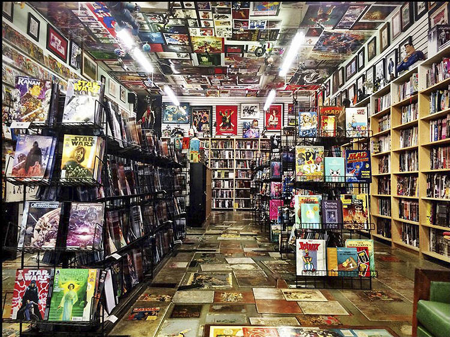

About me, My hobbies


- Artwork and drawing, both traditional and digital
- Listening to music (hip-hop, rnb, anything rock/metal, instrumentals)
- Playing sports, my favourites mainly being Basketball, Tennis, cricket, and swimming
- Collecting anything from my favourite media (comic/manga books, figurines, posters, art supplies)
- Playing video games in my free time; mainly genres such as arcade fighters, platformers, shooters, adventure, and rhythm games!
- Going out with friends; mainly to parks, places to eat, and different towns